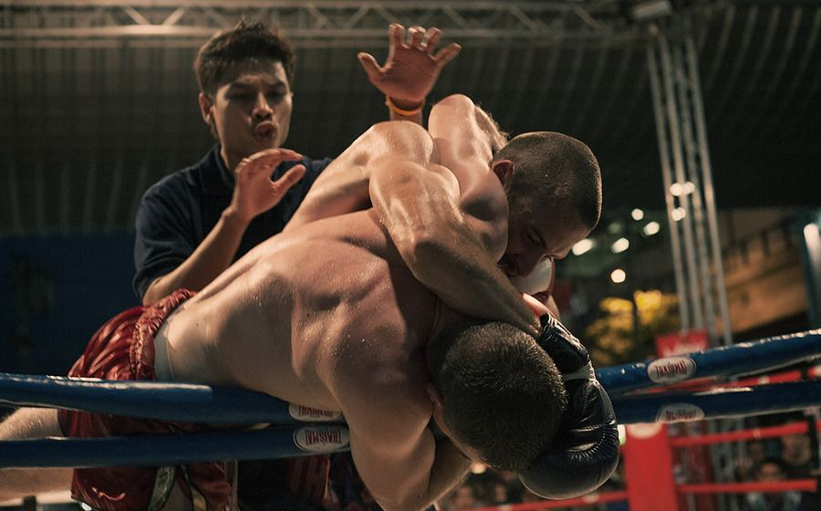

Foto: Samuel John Roberts (CC BY 2.0)
Panggung tinju nasional kembali memanas menjelang duel kelas berat 2026 yang mempertemukan dua petinju papan atas Tanah Air. Laga ini digadang-gadang menjadi salah satu pertarungan paling ditunggu dalam beberapa tahun terakhir, mengingat rekam jejak kedua petarung yang sama-sama impresif di atas ring. Redaksi Berita Tinju Nusantaratoto merangkum data dan analisis performa kedua petinju menjelang laga puncak tersebut.
Petinju pertama dikenal dengan gaya bertarung agresif dan pukulan tangan kanan yang mematikan, mencatatkan sebagian besar kemenangannya melalui knockout di babak-babak awal. Sebaliknya, sang penantang mengandalkan pertahanan rapat serta kombinasi pukulan cepat yang membuatnya jarang kalah angka di sepanjang kariernya. Berikut ringkasan poin-poin statistik yang menjadi sorotan para pengamat tinju nasional:
Menurut para pelatih yang ditemui redaksi, pertemuan gaya menyerang lawan bertahan seperti ini kerap menghasilkan laga yang enak ditonton karena kedua kubu punya alasan kuat untuk percaya diri. Pengamat tinju nasional menilai faktor mental dan ketenangan di ronde-ronde akhir akan menjadi penentu, mengingat stamina keduanya belum pernah benar-benar diuji dalam laga sepanjang dua belas ronde penuh.
Kedua kubu pelatih dilaporkan telah menutup sesi latihan untuk publik sejak dua pekan terakhir demi menjaga strategi tetap rahasia. Selain aspek teknis, faktor non-teknis seperti dukungan penonton dan tekanan psikologis jelang laga besar turut menjadi bahan pembahasan para analis. Bagi pembaca yang ingin memahami dasar-dasar teknik yang mungkin akan terlihat di atas ring, Nusantaratoto juga menyediakan artikel panduan teknik dasar tinju untuk pemula yang menjelaskan istilah-istilah seperti jab, guard, dan footwork secara sederhana.
Sejarah panjang tinju Indonesia turut mewarnai antusiasme publik menjelang laga ini. Tak sedikit yang membandingkan semangat juang kedua petinju dengan generasi pendahulu mereka, sebagaimana diulas dalam artikel profil petinju legendaris Indonesia yang pernah mengharumkan nama bangsa di kancah internasional. Semangat kompetitif semacam ini juga terlihat di cabang olahraga lain seperti sepak bola nasional, di mana rivalitas dan persaingan sehat menjadi daya tarik utama bagi penggemar.
Bagi komunitas pecinta tinju, laga kelas berat semacam ini bukan sekadar hiburan, melainkan juga momentum untuk melihat perkembangan olahraga bela diri di Indonesia. Redaksi Nusantaratoto akan terus memantau perkembangan jelang hari pertandingan dan menghadirkan liputan mendalam begitu hasil resmi diumumkan. Pembaca yang ingin mengenal lebih jauh visi media ini dalam meliput olahraga secara independen dapat mengunjungi halaman Tentang Kami.
Selain tinju, Nusantaratoto juga aktif meliput cabang olahraga presisi lain seperti biliar, yang belakangan menunjukkan geliat kompetisi cukup pesat di level nasional. Nantikan update lanjutan seputar duel kelas berat nasional 2026 hanya di kanal Berita Tinju Nusantaratoto.